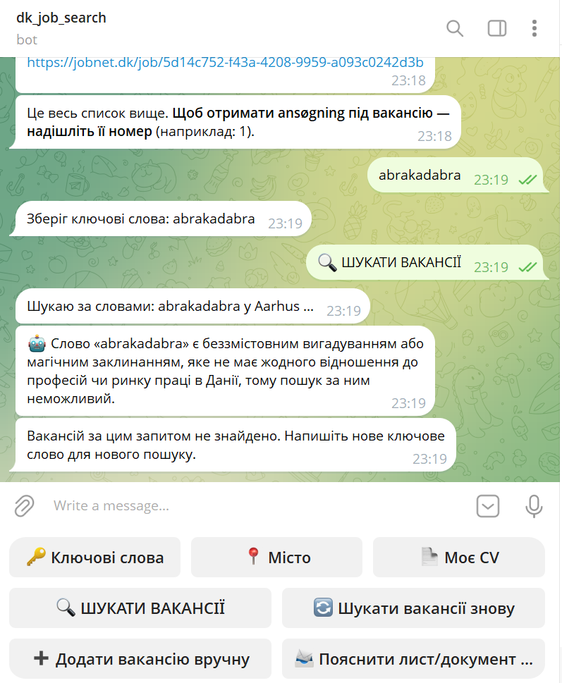
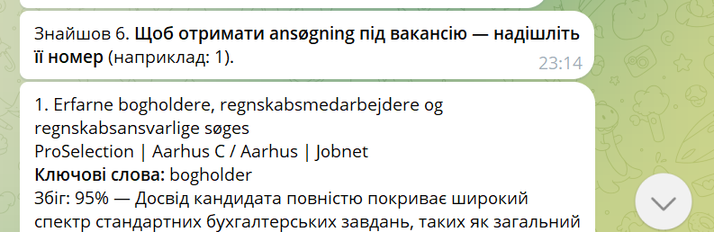
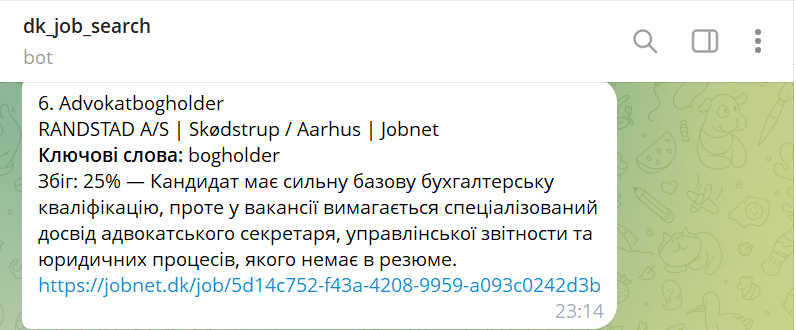
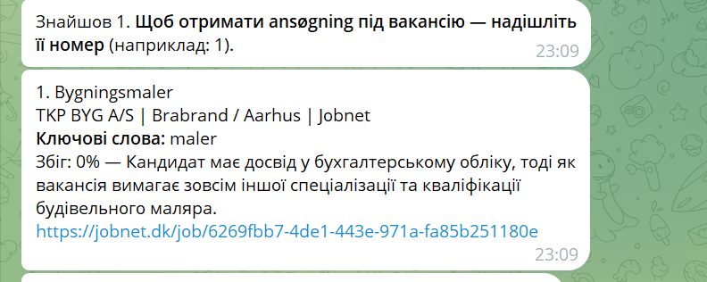
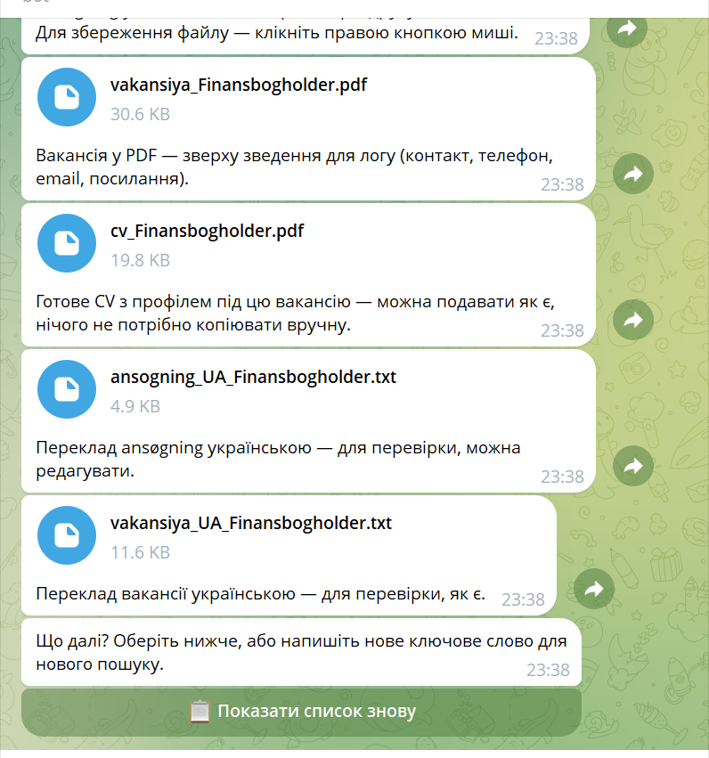

Telegram-бот, який шукає роботу в Данії, порівнює вакансії з твоїм CV за допомогою штучного інтелекту та готує готові документи для заявки — українською мовою, щоб не робити все це вручну щоразу.
Ілюстрація типового сценарію: пошук за ключовими словами, чесна оцінка відповідності вакансії до CV, і готові документи для подачі заявки за менше ніж хвилину.
Анімована ілюстрація на основі реального інтерфейсу бота.
Три кроки від ключового слова до готової заявки.
Бот отримує вакансії напряму з Jobindex.dk та Jobnet.dk за твоїми ключовими словами, з можливістю фільтра за містом. Результати з обох джерел об'єднуються, дублікати прибираються автоматично.
Кожна вакансія і твоє CV надсилаються в Google Gemini, який оцінює реальний фаховий збіг — не просто спільні слова — і дає відсоток відповідності з коротким поясненням.
Обираєш вакансію — бот готує ansøgning данською, переклад листа українською для перевірки, і саму вакансію як PDF із витягнутими контактними даними. Переглядаєш і надсилаєш сам(а).
Не жорсткий список синонімів — коли пошук дає 0 результатів, Gemini отримує доступ до справжнього інструменту пошуку і сам вирішує, чи варто й що саме спробувати натомість.
Ключове слово не знаходиться напряму в жодній вакансії — бот автоматично вмикає AI замість того, щоб просто показати «нічого не знайдено».
Gemini пропонує одне ширше чи синонімічне данське слово, робить справжній пошук із ним і бачить реальний результат — максимум 2 спроби, ніколи більше.
Якщо ключове слово не має сенсу, AI чесно про це скаже, замість того щоб вгадувати випадкове слово.
Приклад — ключове слово з друкарською помилкою: «бухглтер» Слово «бухглтер» схоже на друкарську помилку в назві данської професії bogholder (бухгалтер), тож спробую пошук із правильним написанням. → Спробував «bogholder»: знайдено вакансії.
Приклад — ключове слово: «абракадабра» «абракадабра» — це магічне слово і безглуздий текст у контексті пошуку роботи, тому його не можна трактувати як реальну фахову область чи посаду.

Бот не обмежений лише тим, що сам знаходить на Jobindex і Jobnet. Надішли посилання, PDF або фото оголошення звідки завгодно — бот прочитає його, оцінить відповідність до твого CV так само чесно, і додасть до списку.
Це не просто пошук однакових слів. Якщо в CV немає релевантного досвіду для вакансії, бот чесно покаже 0% — без «втішних відсотків». Вакансія все одно залишається в списку, бо подавати заявку чи ні — завжди особистий вибір людини.



Коли обираєш конкретну вакансію, бот готує документи менш ніж за хвилину:
